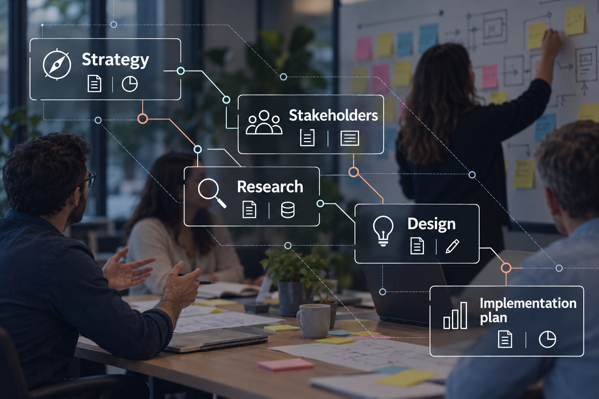

Applying AI-first service design to complex public sector work.
I designed a Microsoft Copilot-based system with specialised agents and reusable skills for the end-to-end service-design process, keeping human judgement at critical decision points.

- My role
- Designer & Engagement Lead
- Type
- AI Practice + Consulting
- Duration
- 11 weeks (2026)
- Focus
- Service design · Research · Government · Agentic AI
- AI
- Microsoft Copilot · Multi-agent workflow · Human-in-the-loop
- Research
- 24 people interviewed · 18 sessions · 17 survey responses
What I did, in four moves
-
01 ChallengeSituation
Large-scale discovery was rigorous, but slow.
Cross-government discovery was manual, with fragmented evidence, multiple teams and difficult stakeholder access, especially over the holiday period.
17 teams across 4 government departments to engage.
-
02 DefineTask
Decompose the work into agents and skills.
I decomposed the engagement into five connected stages and defined specialised agents with reusable skills for each stage.
Strategy, Stakeholder, Research, Design and Report agents.
-
03 MakeAction
Design the agentic workflow in Microsoft Copilot.
I connected the agents through a shared knowledge layer, with clear human checkpoints at every stage.
AI supports structuring, synthesis and draft artefacts; judgement stays human.
-
04 TransformResult
More time for judgement, less for processing.
The agents structured evidence, synthesised research and prepared design artefacts, while I led stakeholder engagement, interpretation and final recommendations.
Research time more than halved across a larger stakeholder network (user-reported).
Agentic workflow architecture: five specialised agents, human judgement at every stage
The agentic workflow I designed
- Document analysisAnalyse background documents
- Brief decompositionExtract objectives, scope and assumptions
- Kick-off workshop planningGenerate agenda and materials
- Project plan generationCreate timeline, activities and resourcing
- Research strategyDefine methods and success measures
- Risk & dependency mappingIdentify risks and dependencies
- Frame the real problem
- Challenge assumptions
- Set scope and ambition
- Approve project strategy
- Stakeholder identificationExtract and enrich stakeholder list
- Stakeholder mappingMap influence, interests and relationships
- Stakeholder communicationDraft tailored communications
- Interview bookingCoordinate calendars and send invites
- Topic guide generationCreate role-specific interview guides
- Engagement planPrioritise and track engagement
- Coverage analysisMonitor representation and gaps
- Read organisational dynamics
- Build trust and access
- Prioritise key stakeholders
- Approve engagement approach
- Topic guide reviewRefine and adapt by stakeholder type
- Interview note processingTranscribe and structure notes
- Evidence codingCode data and tag key themes
- Theme clusteringIdentify patterns across interviews
- Cross-research consolidationCombine interviews, survey and document insights
- Contradiction & gap detectionIdentify divergent views and evidence gaps
- Evidence traceabilityLink insights to source data
- Conduct and adapt research
- Probe nuance and context
- Judge evidence quality
- Challenge weak conclusions
- Current-state synthesisSummarise key issues and opportunities
- Ideation workshop planningGenerate agenda, prompts and materials
- Idea clusteringGroup and synthesise ideas
- Idea evaluationAssess against agreed criteria (e.g. value, feasibility, impact)
- Future-state journeyGenerate customer / user journeys
- Service blueprint draftingCreate end-to-end service blueprint
- Requirements analysisExtract, analyse and prioritise requirements
- Facilitate co-design and workshops
- Make trade-offs visible
- Select and prioritise direction
- Resolve conflicting views
- Report architectureCreate structure and chapter outlines
- Evidence-to-finding mappingLink findings to source evidence
- Recommendation generationDevelop options and recommendations
- Narrative structuringWrite and refine content
- Chart & table generationCreate visualisations and data summaries
- Citation checkingValidate sources and ensure traceability
- Quality reviewCheck consistency, completeness and formatting
- Executive summaryGenerate decision-ready summary
- Challenge the argument
- Own the recommendation
- Tailor message for decision-makers
- Approve final report
- Client documents
- Research data (interviews, surveys)
- Project artefacts (plans, outputs)
- Templates & methods
- Previous research
- Real-time context
- Microsoft Copilot
- SharePoint / OneDrive
- Teams / Outlook
- Forms / Surveys
- Calendar
- Other systems (e.g. CRM)
- Permissions & access control
- Source citation & traceability
- Versioning & audit trail
- Human approval gateways
- Responsible AI & data privacy
The agents did the processing. The judgement stayed with me: designing the right thing, understanding users, deciding what should be automated, shaping the system architecture, resolving ambiguity, prioritising and recognising when generated output is poor.
What I owned
- Designed the end-to-end agentic workflow
- Defined specialised agents and reusable skills
- Designed shared knowledge and hand-off structures
- Built human checkpoints into every stage
- Led cross-government stakeholder engagement
- Connected research evidence to future-state design and reporting
How I worked
- Agentic workflow design
- Microsoft Copilot
- Stakeholder mapping
- User research
- Evidence synthesis
- Future-state design
- Human-in-the-loop
- Evidence-based reporting